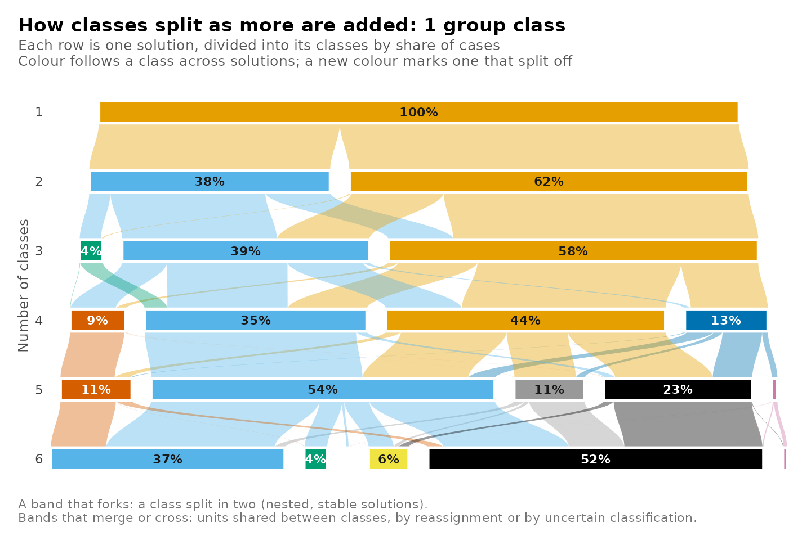
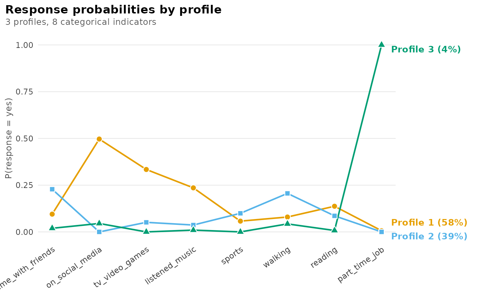
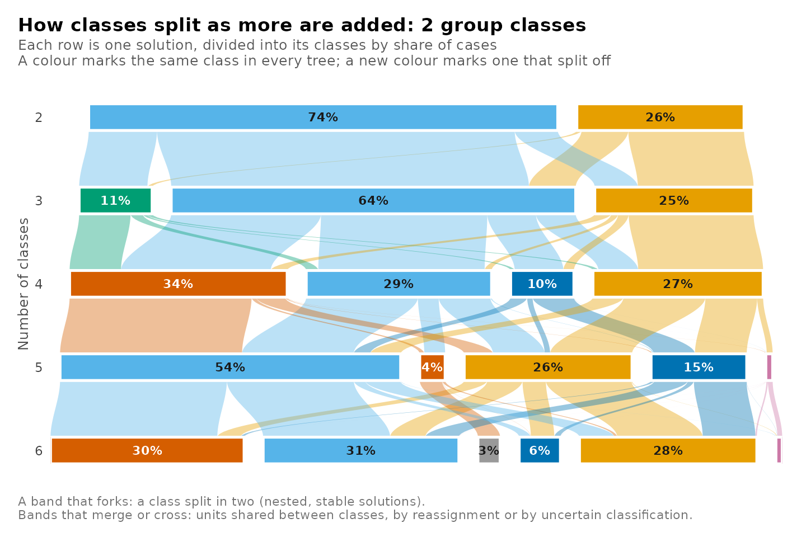
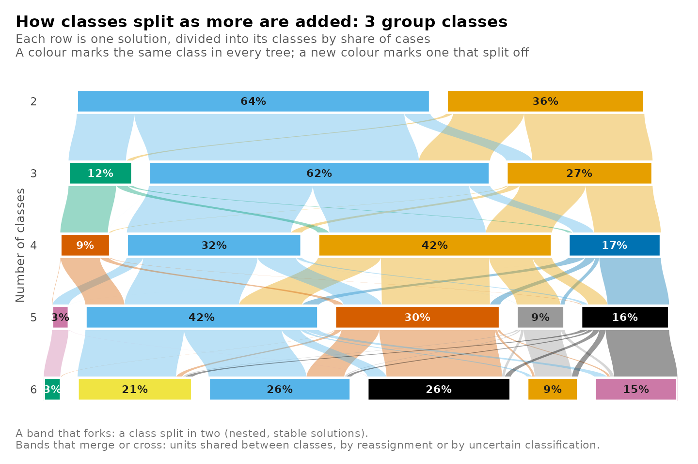
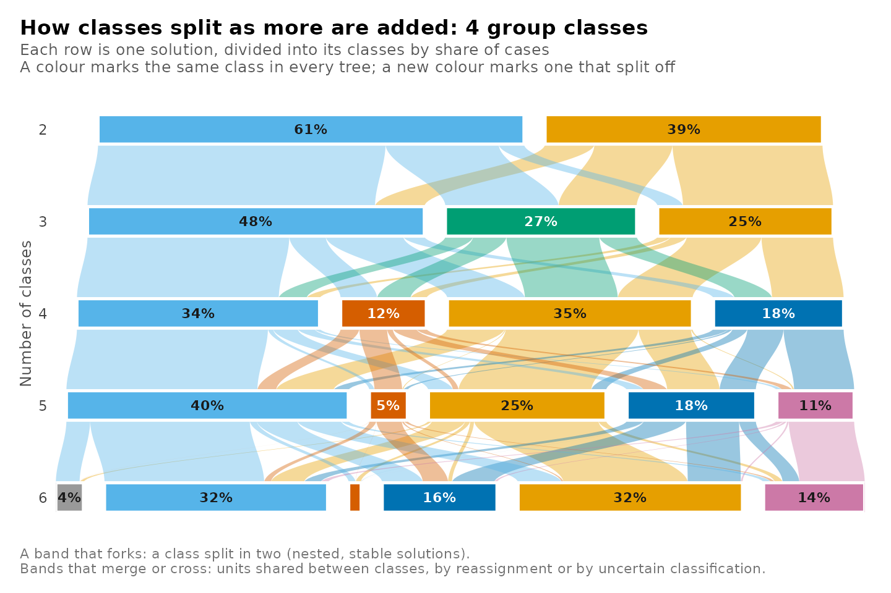
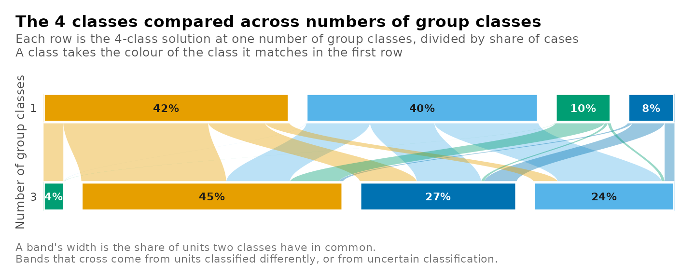
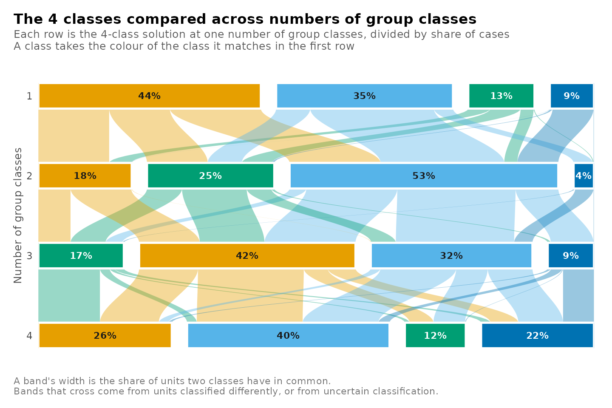
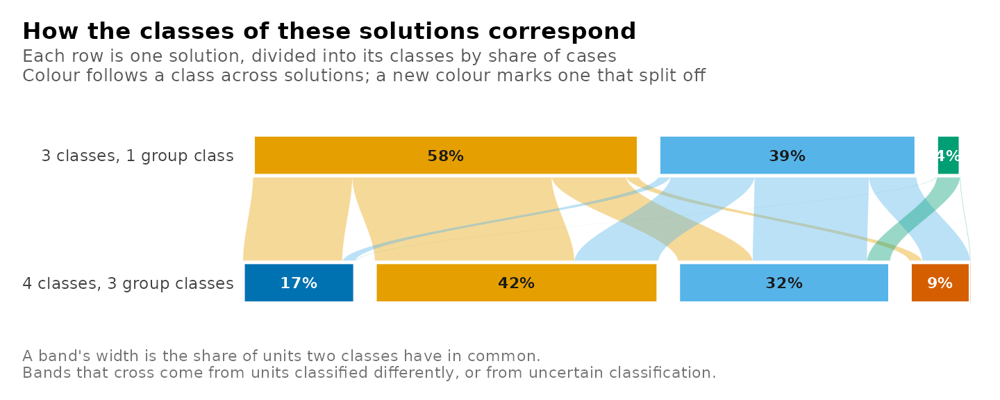
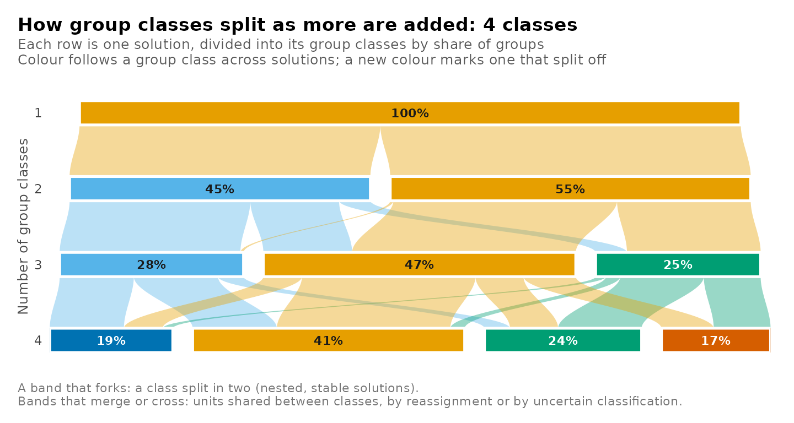

Tree plot
Written by Mohammed Saqr and Sonsoles López-Pernas
Source:vignettes/articles/tree-plot.Rmd
tree-plot.RmdClass enumeration estimates one mixture model for each number of classes. Each model is fitted from its own starting values, and the numbering of its classes is arbitrary, so class 2 of a three-class solution has no defined relation to class 2 of a four-class solution. The relation between two solutions is carried by the observations they classify. When the classes of the larger solution subdivide those of the smaller one, each class of the smaller solution passes its members to one or more classes of the larger, and the solutions are nested. When the larger solution redistributes observations across class boundaries, the classes of the two solutions overlap without nesting. A clustering tree represents these relations for a sequence of solutions (Zappia and Oshlack, 2018). Each row of the tree is one solution, divided into its classes in proportion to their size, and the band between two classes in adjacent rows is proportional to the observations they share.
In a mixture model each observation belongs to every class with a posterior probability. For two solutions and fitted to the same observations, with posterior probabilities and and observation weights , the shared posterior mass of class of and class of is
The masses form a joint distribution over the pairs of classes. Summed over the classes of , they give the posterior share of class , and summed over the classes of , the posterior share of class . The ratio of to the share of is the part of class that the larger solution places in class . A tree built from posterior probabilities retains the uncertainty of the classification, which a tree built from modal assignments discards.
A two-level mixture model has two sequences of solutions (Vermunt, 2003). Observations are classified into classes, and the groups that contain them are classified into group classes by their distribution over those classes. The classes form a tree at each number of group classes, and the group classes form a tree at each number of classes. Solutions can also be compared at a single level, for example the four-class solutions estimated with different numbers of group classes, whose classes need not coincide.
Data and candidates
student_esm holds experience-sampling data from 100
university students (Neubauer and Schmiedek, 2024). At each prompt when
they had not studied since the previous one, the students reported which
of eight leisure activities they had done. The prompts are the
observations and the students the groups. The candidates combine one to
six classes of prompts with one to four group classes of students.
library(latents)
activities <- c("time_with_friends", "on_social_media", "tv_video_games",
"listened_music", "sports", "walking", "reading",
"part_time_job")
models <- enumerate_classes(student_esm, activities, "student",
n_profiles = 1:6, n_group_classes = 1:4,
categorical = activities, n_starts = 3, seed = 1)The grid holds 24 candidates. Their classes of prompts are counted by
n_profiles, the name the package uses at both levels of a
two-level model. The 3 candidates with one class and several group
classes could not be estimated. A group class is defined by its
distribution over the classes, and with a single class every group has
the same distribution. Every tree with two or more group classes
therefore begins at two classes.
The tree at one number of group classes
At one group class the model is a single-level latent class model of the prompts. Its tree shows how the classes of prompts divide as classes are added.
plot_tree(models, n_group_classes = 1)
plot_responses(get_candidate(models, n_profiles = 3, n_group_classes = 1),
intervals = FALSE)
The two-class solution separates prompts with media use (social media, television or games, music) from prompts with offline activities. In the three-class solution the media class keeps 76% of its posterior mass. The offline class divides into three parts. The largest, 64%, forms a class of time with friends and walking, 27% joins the media class, and the remainder forms a class of 4% of prompts in which the probability of a part-time job is 1.00. The part-time job class passes 96% of its mass to a single class of the four-class solution, so it persists as further classes are added.
Every tree
Without a choice of group classes, each number of group classes has its own tree, returned as a separate plot. On an interactive screen device the plots are shown one at a time.
plot_tree(models)


A later tree matches its classes to those of the first tree using a
one-to-one assignment of posterior overlap at the same number of
classes. The assignment maximizes total overlap for square matches up to
eight classes; larger or rectangular matches use a greedy assignment. A
class can therefore be matched to something other than its own
largest-overlap class. Colours mark these assigned correspondences.
combine = TRUE plots every tree as a panel of one
figure.
Comparing solutions at one level
A single value of n_profiles selects one level of every
tree. The rows of the plot are then the solutions with that number of
classes, one for each number of group classes, and the bands show where
the same prompts are classified in each.

The values behind the plot are returned by get_results()
with the same arguments, one row per pair of classes.
get_results(models, "tree", n_profiles = 4, n_group_classes = c(1, 3))
#> tree level from_candidate from_class from_share to_candidate to_class to_share
#> 1 classes4 individuals classes4_groups1 1 0.4006 classes4_groups3 1 0.0353
#> 2 classes4 individuals classes4_groups1 2 0.0801 classes4_groups3 1 0.0353
#> 3 classes4 individuals classes4_groups1 3 0.4239 classes4_groups3 1 0.0353
#> 4 classes4 individuals classes4_groups1 4 0.0954 classes4_groups3 1 0.0353
#> 5 classes4 individuals classes4_groups1 1 0.4006 classes4_groups3 2 0.2702
#> 6 classes4 individuals classes4_groups1 2 0.0801 classes4_groups3 2 0.2702
#> 7 classes4 individuals classes4_groups1 3 0.4239 classes4_groups3 2 0.2702
#> 8 classes4 individuals classes4_groups1 4 0.0954 classes4_groups3 2 0.2702
#> 9 classes4 individuals classes4_groups1 1 0.4006 classes4_groups3 3 0.2430
#> 10 classes4 individuals classes4_groups1 2 0.0801 classes4_groups3 3 0.2430
#> 11 classes4 individuals classes4_groups1 3 0.4239 classes4_groups3 3 0.2430
#> 12 classes4 individuals classes4_groups1 4 0.0954 classes4_groups3 3 0.2430
#> 13 classes4 individuals classes4_groups1 1 0.4006 classes4_groups3 4 0.4514
#> 14 classes4 individuals classes4_groups1 2 0.0801 classes4_groups3 4 0.4514
#> 15 classes4 individuals classes4_groups1 3 0.4239 classes4_groups3 4 0.4514
#> 16 classes4 individuals classes4_groups1 4 0.0954 classes4_groups3 4 0.4514
#> mass share_of_from share_of_to
#> 1 4.63e-04 1.16e-03 1.31e-02
#> 2 4.20e-14 5.25e-13 1.19e-12
#> 3 3.41e-02 8.05e-02 9.66e-01
#> 4 7.24e-04 7.59e-03 2.05e-02
#> 5 1.11e-01 2.77e-01 4.11e-01
#> 6 5.57e-02 6.96e-01 2.06e-01
#> 7 9.81e-02 2.31e-01 3.63e-01
#> 8 5.35e-03 5.61e-02 1.98e-02
#> 9 1.79e-01 4.48e-01 7.38e-01
#> 10 1.71e-02 2.14e-01 7.05e-02
#> 11 4.15e-02 9.79e-02 1.71e-01
#> 12 4.98e-03 5.22e-02 2.05e-02
#> 13 1.10e-01 2.74e-01 2.43e-01
#> 14 7.23e-03 9.04e-02 1.60e-02
#> 15 2.50e-01 5.90e-01 5.54e-01
#> 16 8.44e-02 8.84e-01 1.87e-01Each class of the four-class solution with one group class places
between 45% and 88% of its posterior mass in a single class of the
solution with three group classes. The two solutions describe similar
classes, and the group classes shift a part of the prompts between them.
Omitting n_group_classes compares the same level across
every number of group classes.
plot_tree(models, n_profiles = 4)
Comparing two solutions
Any two candidates are compared with from and
to, each given by its number of classes and number of group
classes.

The candidates can also be given by name, in the order of the rows,
with
candidates = c("classes3_groups1", "classes4_groups3").
The tree of group classes
With level = "groups" the units are the students and the
classes are the group classes. A tree then runs down the numbers of
group classes at one number of classes of prompts.
plot_tree(models, level = "groups", n_profiles = 4)
From two to three group classes, one group class of the
three-group-class solution receives 98% of its students from a single
group class of the two-group-class solution. The other group classes
draw their students from both. The tree of group classes is read in the
same way as the tree of classes. With level = "groups", a
single value of n_group_classes compares one level of group
classes across numbers of classes, as n_profiles does for
the classes.
Summary of calls
| Question | Call |
|---|---|
| How do the classes divide as classes are added? | plot_tree(models, n_group_classes = 1) |
| The same for every number of group classes |
plot_tree(models), combine = TRUE for one
figure |
| How do the solutions with four classes differ across group classes? | plot_tree(models, n_profiles = 4, n_group_classes = c(1, 3)) |
| How do two chosen solutions correspond? | plot_tree(models, from = c(3, 1), to = c(4, 3)) |
| How do the group classes divide? | plot_tree(models, level = "groups", n_profiles = 4) |
| The shared masses behind any of these |
get_results(models, "tree", ...) with the same
arguments |
References
Neubauer, A. B., & Schmiedek, F. (2024). Approaching academic adjustment on multiple time scales. Zeitschrift für Erziehungswissenschaft, 27(1), 147-168. https://doi.org/10.1007/s11618-023-01182-8
Vermunt, J. K. (2003). Multilevel latent class models. Sociological Methodology, 33, 213–239.
Zappia, L., & Oshlack, A. (2018). Clustering trees: A visualization for evaluating clusterings at multiple resolutions. GigaScience, 7(7), giy083.